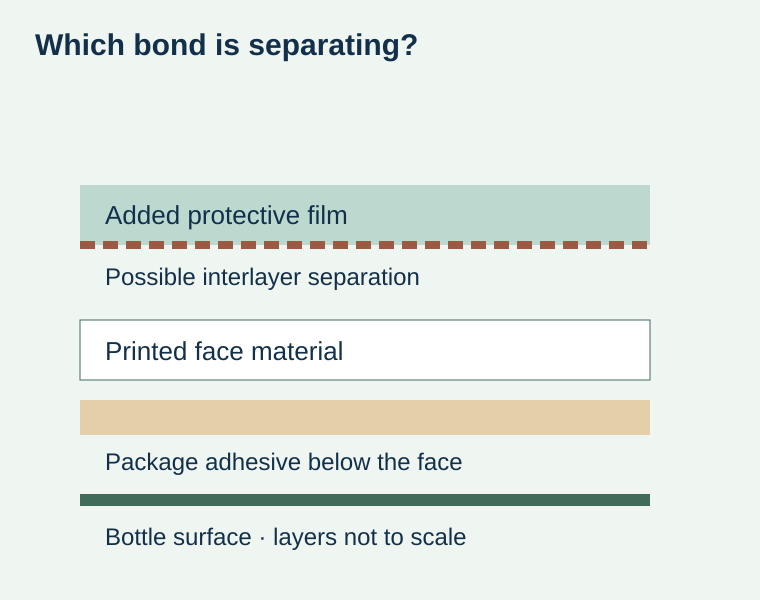
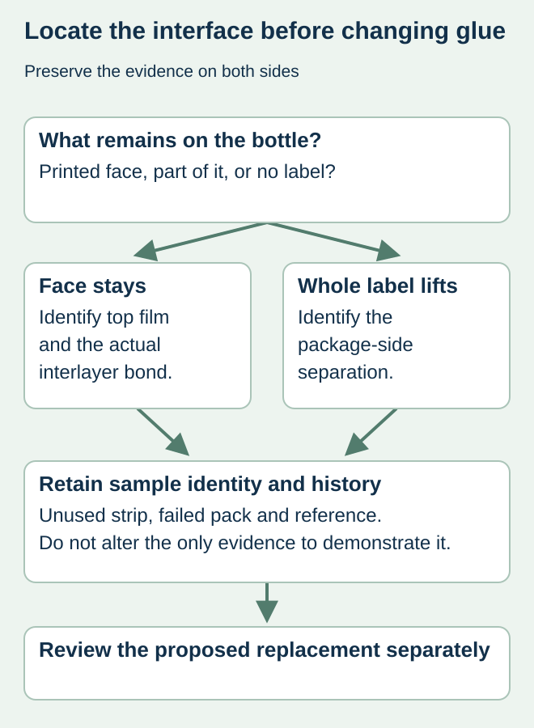

A chilled-drink label remains attached to its bottle, but a thin clear film lifts at the edge. Purchasing describes it as poor bottle adhesion and requests another package adhesive. That remedy may address a different bond from the one actually separating.
Identify what remains on the bottle and what has lifted before choosing a replacement construction. Distinguish a laminate film lifting from the printed face, a split within the face material and the entire label separating from the container. Appearance alone does not establish which material or process caused the event.


Use the construction drawing to name the interface
Ask the converter whether the protection is an added laminate film or a coating/varnish. A varnished label should not be described as having a lifting laminate merely because a transparent-looking fragment appears. Retain the actual proposed and supplied construction identities, including any change made after the approved sample.
ASTM’s published F904 scope for similar flexible laminates concerns bond strength or ply adhesion between laminate layers. That is a different object from peeling an applied label off a jar. The cited page identifies a particular published edition; the qualified laboratory should select the appropriate current method and explain applicability to the actual specimen. No method or acceptance value is prescribed here.
Preserve the two surfaces that tell the story
| Observation | Retain or identify | Do not assume |
|---|---|---|
| Top film lifts, printed face stays | Both sides of the separated area and the original label | The bottle adhesive failed |
| Face material splits | The remaining face and removed fragment | Every transparent fragment is laminate |
| Whole label lifts | Bottle surface, label underside and package history | The top-film bond is the cause |
| Only a photo is available | Construction and unresolved layer identity | A photograph establishes chemistry or cure |
| After a handling step | Time, exposure and exact step first showing the event | The step alone proves root cause |


Compare specimens with a useful history
For a hypothetical juice batch, retain an unused affected strip and an identified labeled bottle showing the observation, subject to the quality team’s handling directions. Add the approved reference if available. Record whether the separation was present on arrival, after application, during wet handling or after rubbing in the pack. Keep those observations separate.
Do not repeatedly peel, wash or warm the only failed sample to demonstrate the effect. Those actions can alter the evidence. Ask the investigating parties which samples, storage and transport are needed, and preserve any actions already taken. An untouched retain and a deliberately separated specimen have different histories.
Select the replacement against the actual use
A proposed change might involve the laminate, laminating system, printed surface or another construction element. Have the supplier identify the proposal and evidence rather than asking for an unspecified thicker film. Thickness alone does not establish interlayer bond performance. Keep wet use, flexing and rubbing requirements attached to the package that will actually be supplied.
If an unlaminated or coated alternative is offered, compare what protection and appearance it represents. It is not automatically equivalent because the front color looks similar. The finish-scope guide helps describe those alternatives, while the complaint guide covers the broader handoff.
Close the investigation and purchasing decision separately. A replacement order can restore supply without proving the original cause. Record the accepted construction, the sample representing it and the conditions still open before authorizing the next food or beverage label run.
Discuss the unresolved label requirement
Send the supplied construction reference, affected product and roll identities, marked photographs and the handling point where separation appears. Preserve samples as the responsible investigator requests. Prepare a label specification inquiry. The contact page opens an email draft and lists email or WhatsApp for attachments. Supply, proof options, testing, pricing and timing require project confirmation.